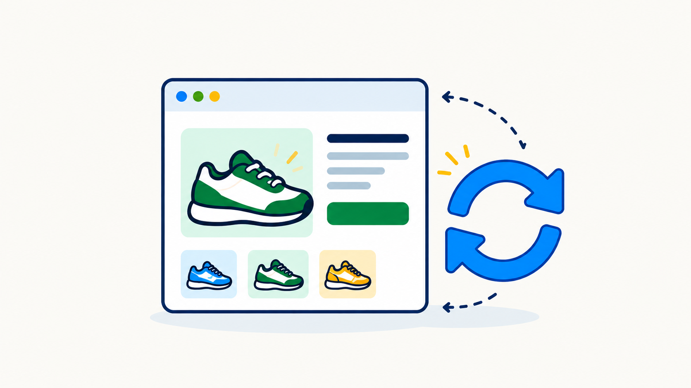

SHOPIFY PRODUCT CONTENT, WITH LESS GRUNT WORK.
Get products online. Get back to your craft.
Your time is better spent on the work that needs your judgment, creativity, and context. penstack handles the repetitive work of preparing Shopify product content while keeping you in control of what gets published.
Start free →
Start with 10 product publishes per calendar month. No credit card required.

THE WORK THAT MATTERS
The work that needs a human should stay human.
You bring product knowledge, judgment, brand context, and a sense of what is accurate and useful. penstack handles the repetitive implementation so you can spend more attention on the work that actually moves your business forward.
FROM SCATTERED WORK TO ONE CONNECTED WORKFLOW
Less busywork. More progress.
Instead of bouncing between product information, SEO tools, image editing, spreadsheets, and copy/paste, penstack keeps the work connected in one reviewable Shopify workflow.
Before
Multiple tools. Lots of tabs. Copy, paste, repeat.

With penstack
Everything you need in one place. Review. Adjust. Publish.
WHAT YOU GET BACK
More time for what moves your business forward.

More complete listings
Product content, SEO, images, and product details work together instead of living in separate tools.
More consistent listings
A connected workflow makes it easier to keep your store accurate, on-brand, and complete.

More useful attention
Spend less time on repetitive admin and more on products, merchandising, customers, and growth.
START WITH SOMETHING REAL.
Start with one product you know well.
See what penstack prepares, what you review, and how the changes reach Shopify.
Start free →Start with 10 product publishes per calendar month. No credit card required.